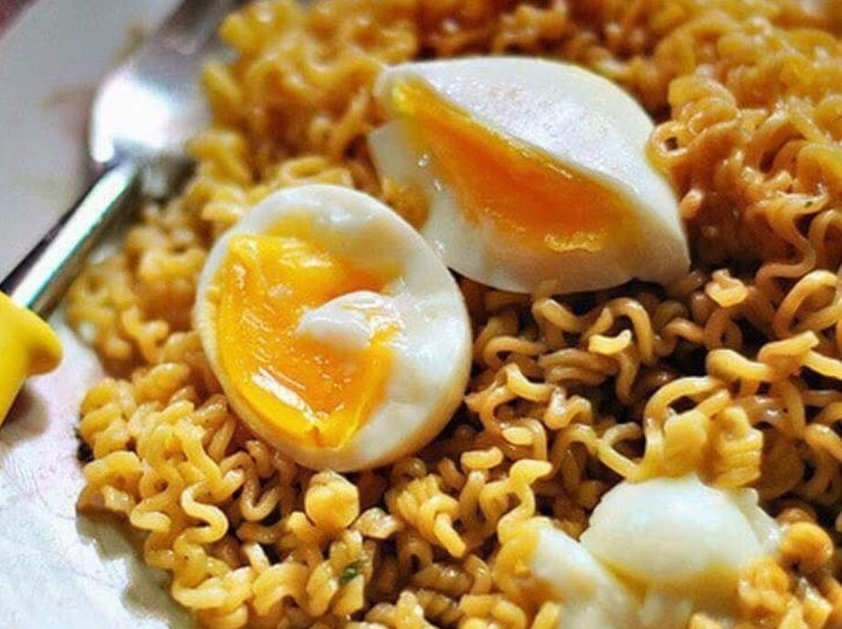

Pancit Canton with Egg

Description
If you're short on time, cracking open a Lucky Me! Instant Pancit Canton for a meal is hard to beat. Chowing down on just carbs, however, isn't always our favorite thing.
We're always looking to add a little something extra to our quick and easy meals, so we went on a quick search for the perfect protein to match with our instant noodles. That's when it dawned on us. A poached egg would go perfect with the noodles.
Ingredients
- 1 Lucky Me! Pancit Canton (We like to use Chillimansi)
- 1 Egg
Steps
- Boil water and add the Pancit Canton Noodles.
- Cook for 2-3 minutes until the noodles are al dente.
- Drain the noodles, place on a plate, and mix the seasonings and sauces.
- Crack the egg and poach in the same pot (if you're looking for a perfect poached egg, you may want to do it in a separate pot).
- Place the poached egg on top of the mixed noodles
- Break the egg and get some of that goodness
Back